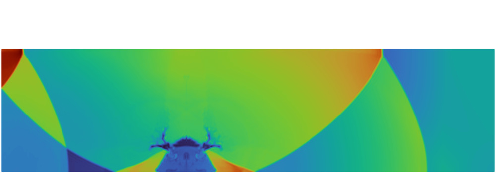

NUM-SCARS workshop
22nd-23rd January, 2026
CWI, Amsterdam, The Netherlands
NUM-SCARS
(advanced NUmerical Methods for
SCAle Resolving Simulations)
is the inaugural workshop to mark the official launch of the newly formed
ERCOFTAC Special Interest Group - SIG55,
which shares its name with the event. The workshop seeks to unite a diverse community of researchers and practitioners,
including seasoned experts, early career scientists, PhD students, and industrial partners, to foster momentum, enhance visibility,
build a strong collaborative foundation, paving the way for future events.
Format and Activities
A 2-day workshop featuring:
- keynote talks on advances in methods and closure models, open tools and benchmarking
- contributed posters by early-career researchers
- two roundtable discussions on future directions, benchmark definition and open-source tools
- a roundtable discussion on collaborative projects and SIG growth strategie
Speakers
- Andrea Beck, University of Stuttgart
- Francesco Capuano, Universitat Politècnica de Catalunya
- Alessandro Colombo, Università degli Studi di Bergamo
- Gennaro Coppola, Università degli Studi di Napoli Federico II
- Pedro Costa, TU Delft
- Ed Komen, NRG Pallas
- Oriol Lehmkuhl, Barcelona Supercomputing Center
- Artur Palha, TU Delft
- Sergio Pirozzoli, Università La Sapienza
- Hendrik Ranocha, Johannes Gutenberg University Mainz
- Benjamin Sanderse, Centrum Wiskunde & Informatica
- F. Xavier Trias, Universitat Politècnica de Catalunya
- Arthur Veldman, University of Groningen
- Francesc Verdugo, VU Amsterdam
- Roel Verstappen, University of Groningen